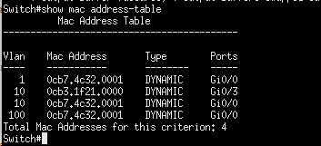
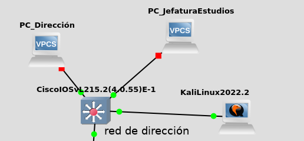
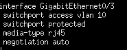
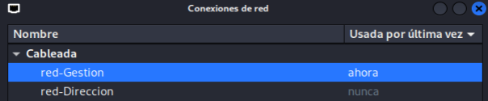
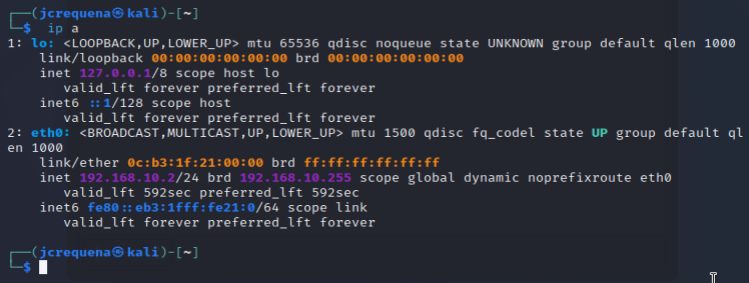
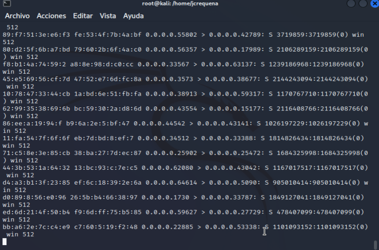
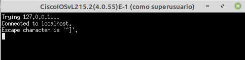
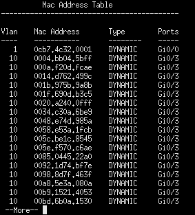
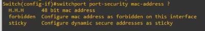

6.2.1 Ataque MAC flooding
1. Introducción
Es un ataque DoS (denegación de servicio) agotamiento RAM SW por inundación de la tabla CAM, es decir, se intenta que el switch que se tenga accesible, llene la tabla de direcciones MAC y comience a funcionar erráticamente o deje de funcionar.
La tabla CAM de un Switch, relaciona las MAC con los puertos. Consultamos tabla MAC del Switch. Es el listado en memoria de las MAC que ha aprendido que son accesibles por cada puerto del Switch.

Figura 1. Tabla CAM de un switch Cisco.
2. Escenario
- Red de dirección de un centro educativo conectada a la interfaz de un Switch Cisco con vlan 10.
-
Equipo Kali conectado por dhcp a la red de dirección y que hará de atacante para inundar la tabla MAC del switch de Dirección.

2. Procedimiento
Conectamos un equipo Kali al Switch de dirección en el puerto Gi0/3 que tiene configurada la vlan 10.

Figura 2. Configuración del puerto Gi0/3 del switch.
En el equipo Kali, se configura una nueva red para obtener ip del servidor dhcp de la vlan 10. Para este caso, le llamamos red-Direccion y obtiene la ip 192.168.10.2 por dhcp.
|  |  |
| Figura 3. Crear nueva red. | Figura 4. Listar datos tcp/ip del equipo Kali. |
El equipo Kali será el equipo atacante para inundar la tabla MAC del switch de Dirección.
Por defecto, el switch aprende direcciones MAC por puerto sin limitación, es decir, a un puerto del switch llegan las MAC de todos los dispositivos que cuelguen de allí, por ejemplo, si hay un switch, de todos los equipos que cuelguen de ese switch y pasen por el puerto, este aprende sus MAC.
A continuación, ejecutamos el ataque MAC flooding mediante macof.
Macof llena la tabla de CAM en menos de un minuto, ya que envía una gran cantidad de entradas MAC, aproximadamente 155.000 por minuto.
Para instalarla (viene instalada en Kali Linux), hay que instalar el paquete dsniff: apt install dsniff.
La sintaxis de macof es:
macof -i <Interfaz> -d <Destino>
donde,
- <Interfaz>: Especificar la interfaz a enviar.
- <Destino>: Especifica la dirección IP de destino.
# macof -i eth0 -d 192.168.100.103
Lo que hace el ataque es inventarse MAC para enviárselas al switch para que las vaya aprendiendo, es decir, comenzar a llenar la tabla MAC de ese puerto.

Figura 5. Generación de MAC's aleatorias.
Cómo se puede observar en la figura siguiente, una vez se realiza el ataque, a los pocos segundos se consigue la DoS del switch Cisco una vez la memoria CAM se llena.

Figura 6. No se puede acceder al equipo.
Si se comprueba la tabla CAM del Switch (figura inferior), se obtiene la misma completamente llena.
switch#show mac address-table

Figura 7. Tabla CAM del Switch.
3. Acciones para evitar los ataques MAC flooding – Securización en el Switch Cisco
Hay que configurar el switch para que aprenda un número determinado de MAC's por puerto. Esto puede ser un problema si el número es pequeño, es decir, si configuramos para que aprenda una MAC por puerto, no podremos tener más de un equipo conectado a ese puerto.
Hay que estudiar cuál sería el número razonable de direcciones MAC que puede aprender por puerto.
Utilizaremos el port security para configurar todo esto.
suponiendo que se quiere establecer un máximo de 2 MAC por puerto, hay que realizar la siguiente configuración en cada una de las interfaces del switch.
Switch>enable
Switch#conf t
Enter configuration commands, one per line. End with CNTL/Z.
Switch(config)#interface Gi0/3
Switch(config-if)#switchport mode access
Switch(config-if)#switchport port-security
Switch(config-if)#switchport port-security mac-address sticky
Switch(config-if)#switchport port-security violation shutdown
Switch(config-if)#switchport port-security maximum 2
Switch(config-if)#end
Switch#
Donde:
- mac-address sticky o forbiden.
- sticky: Se le dice que guarde las MACs que ya tenga y esas serán las MACS que se tengan aprendidas a partir de ahora hasta el máximo que se le haya establecido, que para este caso es 2 (maximum 2).
- forbiden: Con esta directiva se marcan las MAC como prohibidas.
- violation shutdown (el más restricitivo): Cuando se llega al máximo, no se permiten más.
- maximum 2: Se establece a 2 el número de MACs que aprende.
Para acceder a la ayuda de la directiva mac-address, el comando es; switchport port-security mac-address ?

Para borrar la tabla CAM, el comando es el siguiente:
Switch# clear mac address-table dynamic
En el siguiente vídeo, se describe el procedimiento para mitigar un ataque MAC flooding en un mismo dominio de broadcast de una red de un centro educativo, en concreto, en la red de dirección de un centro segmentada con VLAN's, y cómo se hace con la popular distribución Kali Linux.
Vídeo 1. Mitigar Ataque MAC flooding.
4. Referencias
Obra publicada con Licencia Creative Commons Reconocimiento No comercial Compartir igual 4.0